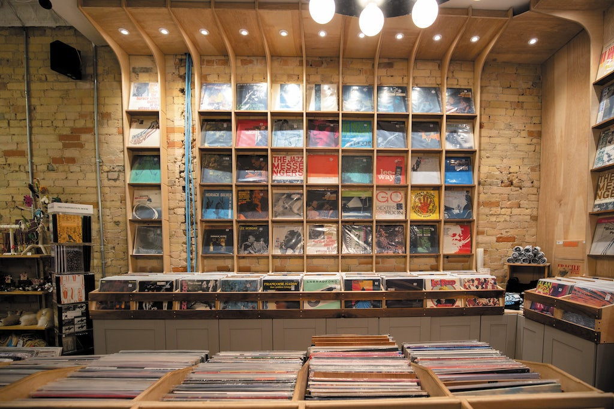

History of the Jonas Store
Caleb Balas, October 23, 2025

The Jonas Store has been a popular 4-star record store around Los Angeles, California since the reunion of the Jonas Brothers in 2019. It's the home for all of your favorite Jonas Brothers' hits and albums including: "Sucker", "Burnin' Up", and "When You Look Me In the Eyes". It offers some of the most thrilling record store features that you'll find in the features box below, and it has a knowledgableable staff that caters to whatever you need during your Jonas Store visit. The Jonas Store will provide you with what you're looking for from them and an experience that you may never forget.
Features
- A Guided Tour of the Whole Facility
- Live Musical Performaces by the Jonas Bros. every Saturaday night.
- Album Release Parties for Some of the Jonas Bros.' newest songs.
- Listening sessions and Q&A panels with the Jonas Bros.
- A very well organized inventory with records, vinyls, and albums from the Jonas Bros.